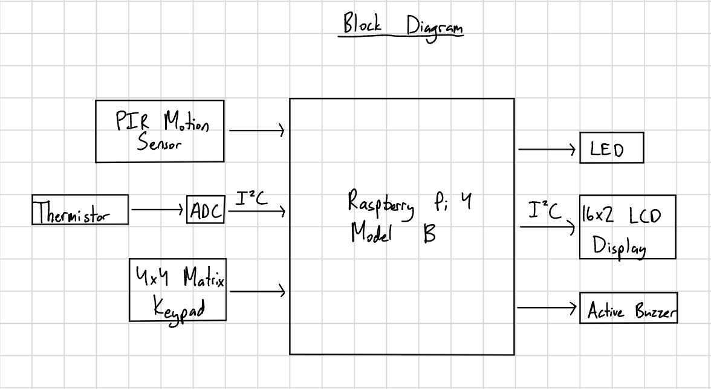

Raspberry Pi Burglar Alarm System

Project Overview
This project implements a standalone burglar alarm system using a Raspberry Pi 4, PIR motion sensor, thermistor-based temperature monitoring circuit, ADS7830 I²C ADC, keypad input, and a 16x2 I²C LCD. The system allows users to arm and disarm monitoring functions while continuously tracking environmental conditions and sensor activity.
Motion detection and temperature monitoring operate independently, allowing the system to trigger different alarm outputs depending on the detected condition. The user interface provides immediate feedback through the LCD display while the keypad enables direct interaction with the system.
The project demonstrates practical embedded Linux development, peripheral interfacing, sensor integration, alarm state management, and hardware/software integration while emphasizing reliability and troubleshooting of real hardware systems.
Features
- Keypad-controlled arm/disarm operation
- PIR motion sensor monitoring
- Thermistor-based temperature change detection
- ADS7830 I²C ADC integration
- 16x2 I²C LCD user interface
- Independent motion and temperature alarms
- Configurable alarm thresholds
- LCD startup reliability improvements
- Makefile-based build system
- Modular project organization
Challenges Solved
LCD Initialization Reliability
During testing, the LCD occasionally powered up displaying only white boxes despite remaining visible on the I²C bus. Troubleshooting included bus verification, LCD-only testing, and isolation of application software from hardware initialization behavior.
Initialization retry logic was added to improve startup reliability and allow automatic recovery from intermittent LCD startup failures.
Environmental Change Detection
Instead of relying on a fixed temperature threshold, the system records a baseline ADC value during startup and compares future readings against that baseline. This allows meaningful environmental changes to be detected regardless of ambient starting conditions.
Hardware Integration and Debugging
The project required integration of GPIO devices, I²C peripherals, ADC-based sensor monitoring, keypad scanning, and LCD communication. Extensive troubleshooting and testing were performed to validate reliable operation across all subsystems.
System Architecture

- Keypad Interface: User arm/disarm commands
- PIR Sensor: Motion detection monitoring
- ADS7830: ADC conversion for thermistor readings
- LCD Interface: User status display and feedback
- Alarm Outputs: Buzzer and LED indicators
System Operation
DISARMED
- Motion alarms disabled
- Temperature alarms disabled
- Buzzer off
- LED off
ARMED
- PIR sensor actively monitored
- Temperature readings periodically sampled
- Motion detection activates buzzer
- Temperature changes activate LED
Hardware Used
- Raspberry Pi 4 Model B
- PIR Motion Sensor
- ADS7830 I²C ADC
- Thermistor Voltage Divider
- 16x2 I²C LCD with PCF8574 Backpack
- 4x4 Matrix Keypad
- Active Buzzer
- Status LED
Embedded Concepts Demonstrated
- GPIO interfacing
- I²C communication
- ADC-based sensor monitoring
- Embedded user interfaces
- Keypad scanning and debouncing
- State-based alarm control
- Hardware initialization
- Reliability improvements
- Build automation with Makefiles
- Hardware/software integration
- Embedded debugging and troubleshooting
Future Improvements
- PIN-protected arming and disarming
- Alarm event logging
- Additional fault diagnostics
- Audible alarm patterns for different fault types